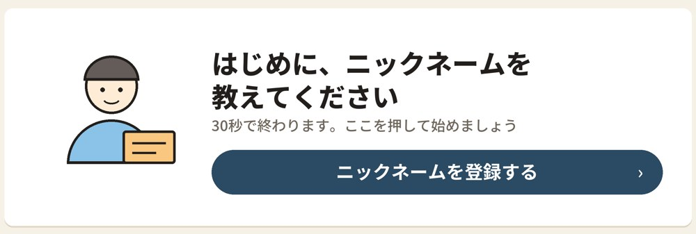
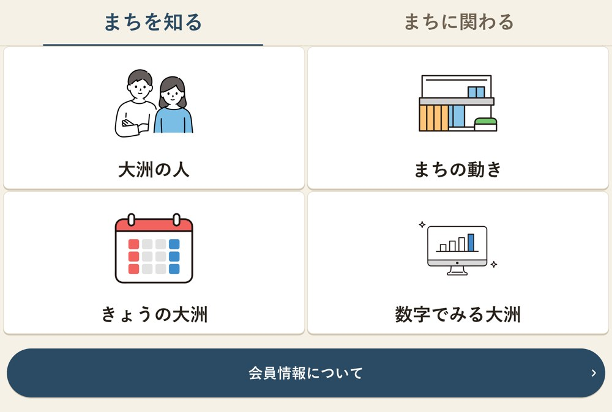
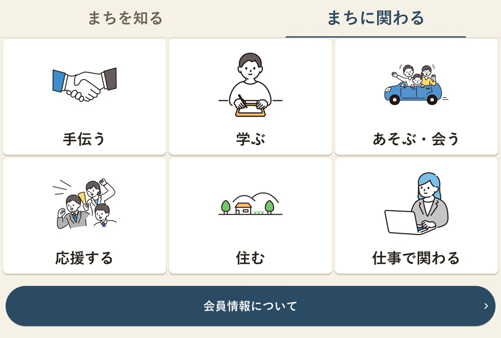
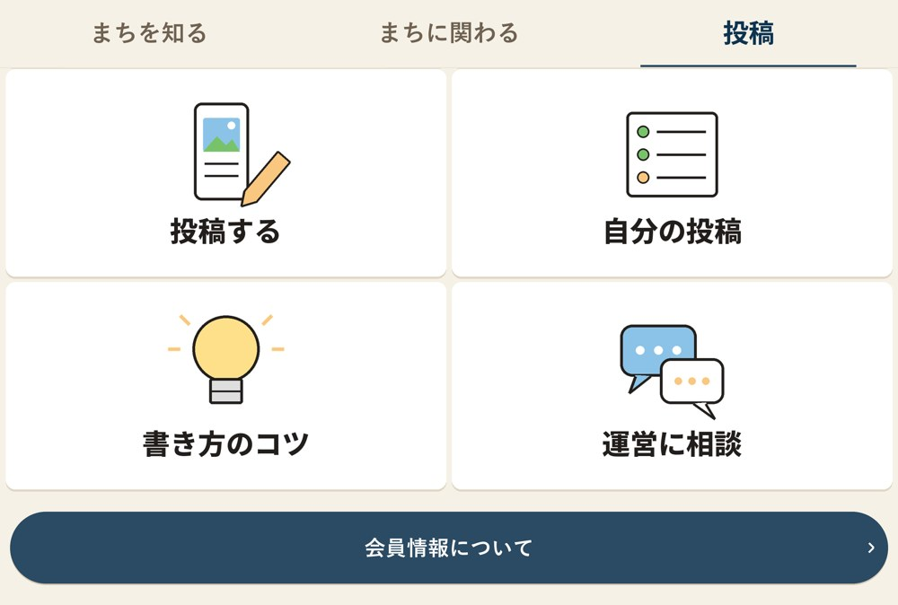
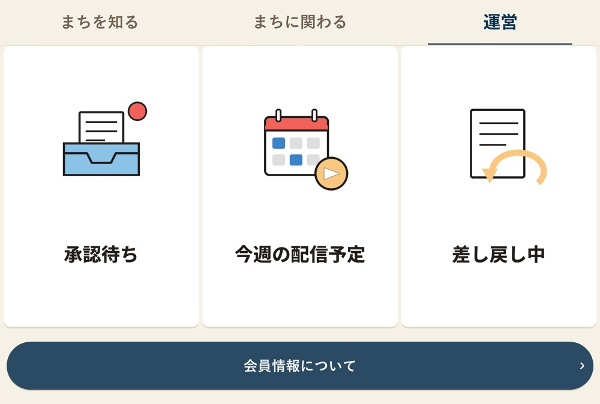

誰が何を使うか
会員が使うLINEの画面と、運営が使う管理画面の2つでできています。どちらも、Cloudflare上のプログラムが会員台帳を動かしています。
友だち追加、ニックネーム登録、あいさつの質問への回答、メニューから案内ページを見る、会員情報の確認
写真と文章を送って投稿する、自分の投稿の状況を見る、運営に相談する
届いた投稿を承認して配信する、直す、差し戻す
権限に応じて会員の閲覧・CSV出力・LINE配信・データ削除・ID管理
テスト環境（STG）と本番
修正はまずSTGで試し、問題がなければ同じ内容を本番に反映します。STGを触っても、本番の会員には何も届きません。
| STG（テスト） | 本番 | |
|---|---|---|
| LINEアカウント | STG_大洲カンパニー | 大洲カンパニー |
| 管理画面 | STGプログラム（ozu555-line-staging）の /admin/panel | 本番プログラム（ozu555-line）の /admin/panel |
| 使う人 | 運営メンバーのテスト用 | 一般の会員 |
管理画面のURLは、管理者から個別にお伝えします。
会員の段階
②は、直近30件の一斉配信のうち、リンクを20%以上押した人です。配信を受けたのが10件未満の人は①のままです。①②は運営側の集計用で、会員には表示しません。
運用ルール
取り返しのつかない事故は「本番でいきなり試す」「鍵が漏れる」「個人情報を広い場所に置く」の3つから起きます。
変更は必ずSTGから
おかしければ前の版に戻せます。プログラムと変更メモは、全社共有の「LINE設計」フォルダにあります。
鍵とトークン
- Channel secret・チャネルアクセストークンは、KMのパスワード管理にだけ置く
- チャット・メール・共有ドライブ（全社共有を含む）には貼らない・置かない
- うっかり外に出したら、すぐ再発行する。再発行すると古いものは無効になる
- 管理画面のID・パスワードも同じ扱い。使わなくなった人のIDは無効化する
個人情報
- 会員の名簿・LINEのID・個人の連絡先は、素材置き場（おまかせクラウドストレージ）に置かない
- CSVで書き出した会員データは、使い終わったら消す
- 「データを消してほしい」と依頼があったら、会員ID（6桁）で本人を確かめ、管理者が管理画面から削除する
配信通数
LINEの無料枠は月200通です。一斉配信は「人数×回数」通を使います。会員が増える前に有料プランへの切り替えが必要です。通数が足りないと配信が止まります。
困ったとき
まず「トーク画面を一度閉じて開き直す」を試してください。表にないものは、画面のスクリーンショットとエラー文をそのまま丸岡さんに送ってください。
| こんなとき | 考えられる原因 | すること |
|---|---|---|
| メニューが切り替わらない | LINEアプリが古い表示のまま | トーク画面を閉じて開き直す。役割の変更なら、管理画面で付け直す |
| タブを押しても切り替わらない | メニューを登録し直した直後で、LINE側の反映が遅れている | 数分待ってからもう一度押す |
| ニックネームがおかしい人がいる | 10/19の対策より前に登録された | 管理画面からは直せない。本人にブロック→追加し直しをお願いすると、ニックネームから聞き直せる |
| 管理画面にログインできない | パスワードを5回間違えてロックされた | 管理者が設定画面で解除する。忘れたときはパスワードを再設定する |
| 「認証切れです」と出る | ログインから12時間たった | もう一度ログインする |
| 一斉配信が送れない（quota insufficient） | 今月の配信通数が足りない | 対象を絞るか、LINEの料金プランを上げる |
| 運営に承認カードが届かない | 「運営」の役割が付いていない、またはブロック中 | 管理画面で役割を確認する。「運営」タブの「承認待ち」からも確認できる |
| リーダーの投稿が承認待ちに出ない | リーダーが「送信完了」を押していない | 30分たつと自動で承認待ちに回る。急ぐときはリーダーに「送信完了」を押してもらう |
| 返事が必要な問い合わせが来た | 自動返信で「個別で返信いたしかねます」が出ている | 管理画面の「個別に配信」でその人を開き、個別やりとりをオンにして返事する |
| 会員が「退会・ブロック」に入った | 本人がブロックした | 対応不要。配信対象から自動で外れる。追加し直せば戻る |
本番前に決めること
10月20日の週のリリース（9/28会議の目安）に向けて、次の項目が残っています。
- リーダー投稿窓口とニックネームの守りを、STGで確かめてから本番へ反映する
- アカウント全体の「既定メニュー」を登録用にする（個別の切り替えが万一失敗しても、未登録の人が通常メニューに入らないように）
- 3タブ目（運営・投稿）の文字とアイコンを、今のメニューと同じテイストに差し替える
- 警報メールの送信元アドレスを設定する（今は空欄で、異常時のメールが届かない可能性がある）
- LINEの料金プランを決める（無料枠は月200通）
- 管理画面のIDを担当者に発行する（KM・KH・いよぎん）
- 承認者を2人以上指名し、最初に試すリーダー2〜3人を決める
- 投稿を整えるときの文体の見本を用意する（福山さんのブランディングと揃える）
まだできないこと
- 管理画面から会員のニックネームを直すこと
- リーダー投稿のAI下書き、関心テーマでの配信先の絞り込み、週まとめの自動配信、夜間の翌朝回し、LINE内の編集画面
- 会員からの問い合わせに自動で答えること（今は定型文のみ）
友だち追加からニックネーム登録まで
友だち追加した人は、まずニックネームを登録します。登録が済むまでは、メニューが「ニックネームを登録する」ボタン1つだけになります。
まず、何とお呼びすればいいですか？
（ニックネームで大丈夫です。あとで変えられます）

大洲の「気になる」は、どれに近いですか？人に会いたいたべもの・商品大洲城…
- 友だち追加すると、ニックネームを聞かれます。「入力する」を押すとキーボードが開きます
- メニューは登録用の1ボタンだけ。途中で離れた人も、ここを押すと「おかえりなさい！ 続きから始めます」と再開できます
- 入力した名前はすぐには登録されません。「はい」を押して初めて登録されます
- 登録が済むとメニューが通常の2タブに切り替わり、あいさつの質問が続きます
あいさつの質問の順番
ブロックしてから追加し直した人には、ニックネームからもう一度聞きます。答えた内容で登録が更新されます。
リッチメニュー（画面下のメニュー）
「まちを知る」「まちに関わる」の2タブです。上のタブを押すと切り替わります。

- 上のタブで「まちを知る」「まちに関わる」を切り替えます
- いちばん下の帯「会員情報について」を押すと、「登録内容を確認する」「退会について」を選べます
| タブ | ボタン | 押したとき |
|---|---|---|
| まちを知る | 大洲の人／まちの動き／きょうの大洲／数字でみる大洲 | 案内ページが開く |
| まちに関わる | 手伝う／学ぶ／あそぶ・会う／応援する／住む | 案内ページが開く |
| まちに関わる | 仕事で関わる | トークに案内文が届く |

案内ページへのボタンは、押された回数だけを匿名で数えています。
会員情報と自由な発言
登録内容を確認する
会員ID（6桁）・表示名・推し・大洲との関係・お住まい・関わり方の希望・紹介元が表示されます。問い合わせのときは、この会員IDで本人を特定します。「退会について」では、ブロックすれば配信が止まることを案内します。
会員が自由に文字を送ったとき
自動で「すみません！個別で返信いたしかねます」と返します。運営が返事をしたいときは、管理画面の「個別に配信」で対応します。
リーダー投稿窓口の流れ
管理画面に触れないプロジェクトリーダーが、LINEで写真と文章を送るだけで発信できます。運営は届いたカードを見て「承認して配信」を押すだけです。
リーダーの操作（「投稿」タブ）
いつものLINEで写真と文章を送るだけです。文章は箇条書きや話し言葉のままで構いません。

- 投稿する：投稿モードになります。写真と文章を送ってください
- 送信完了を押すと1件として受け付けます。30分何も送らなければ自動で締めます。「取り消す」でやめられます
- 自分の投稿：最近5件の状況（承認待ち／配信済みと届いた人数／差し戻しと理由）。差し戻しには「差し戻しに返事する」から追記できます
| ボタン | 押したとき |
|---|---|
| 書き方のコツ | いつ・どこで・何を・参加のしかた・問い合わせ先の5つを案内。例文も見られる |
| 運営に相談 | 次に送った文章が運営の管理画面（個別チャット）に届く。配信はされない |
運営（承認者）の操作（「運営」タブ）
新しい投稿が届くと、写真付きのカードが運営のLINEに届きます。カードの中で承認まで済みます。
軍手は用意します。
配信先：友だち全員（412人）

- 承認して配信：「すぐ配信／週まとめに入れる／やめる」を一度聞き返します。「すぐ配信」で友だち全員に送り、リーダーにも知らせます。2回押しても二重には送りません
- 直す：今の文章が届きます。【長押しでコピーして、再度全文を入力してください】の案内どおり、今の文章をコピーして直し、全文をトークに送ります。直したカードがもう一度届き、そのまま承認できます
- 差し戻す：リーダーへのひとことを選ぶか入力します（「日時を教えて」などの定型文あり）。ひとこと無しでは差し戻せません
| 「運営」タブ | 押したとき |
|---|---|
| 承認待ち | 承認待ちの投稿を、横にめくれるカードで古い順に表示（最大10件） |
| 今週の配信予定 | 今週配信したものと、週まとめに入る予定の件数。週まとめの下書きも見られる |
| 差し戻し中 | 返事待ちの投稿と、差し戻した日・伝えたこと。「催促」「取り下げる」ができる |
試行版でまだできないこと
- AIによる下書き（今はリーダーの文章そのまま）
- 関心テーマでの配信先の絞り込み（今は友だち全員のみ）
- 週まとめの金曜自動配信（今は「週まとめ待ち」の印が付くだけ）
- 夜間（21時〜8時）の翌朝回し（今はその場で配信）
- LINE内の編集画面（今は直した文章をトークに送る方式）
ログインと権限
管理画面はパソコンのブラウザで開きます。IDとパスワードは管理者から受け取ってください。
権限（3段階）
| できること | 閲覧のみ | 運用担当 | 管理者 |
|---|---|---|---|
| ダッシュボード・会員一覧・会員詳細・配信履歴を見る | ○ | ○ | ○ |
| CSVをダウンロードする | ○ | ○ | ○ |
| 一斉配信・個別メッセージを送る、自動返信を止める | — | ○ | ○ |
| 会員のデータを削除する | — | — | ○ |
| 管理画面のIDを管理する | — | — | ○ |
| 会員に「LINEでの役割」（リーダー／運営）を付ける | — | — | ○ |
付与の方針（9/28会議）：管理者はKM代表アドレス、運用担当はKH側。KM・KH・いよぎんの担当者に順次付与します。
ダッシュボード
会員の状況をひと目で確認できます。
数字・グラフは画面の例です。
会員一覧
| ニックネーム | 友だち追加日 | ステータス | 推し | お住まい | 関わり方 | 関係人口 |
|---|---|---|---|---|---|---|
| あすか | 2026-10-02 | 有効 | 人に会いたい | 大洲市内 | あそぶ・会う | ① |
| トシ | 2026-10-02 | 有効 | 大洲城 | 松山市 | 手伝う | ② |
| のうだ | 2026-10-02 | 退会・ブロック | たべもの | 大阪府 | 応援する | ① |
- 検索：ニックネームか会員ID（6桁）で探します
- 状態：「有効会員」「退会・ブロック」で絞れます
- 項目で絞り込む：推し・大洲との関係・お住まい・紹介元・関わり方の希望（複数選ぶと、どれかに当てはまる人）
- CSVダウンロード：今の絞り込みのまま、出したい項目を選んで書き出します。個人情報を含むので、使い終わったら消してください
ニックネーム・人数は画面の例です。
会員詳細・役割・削除
会員一覧の行を押すと、右側に詳細が開きます。管理者は、ここでLINEでの役割を付けたり、データを削除したりできます。
| ニックネーム | 友だち追加日 | ステータス |
|---|---|---|
| あすか | 2026-10-02 | 有効 |
| トシ | 2026-10-02 | 有効 |
基本情報
関係人口
紹介元
LINEでの役割（リーダー投稿窓口・試行中）
- LINEでの役割（管理者のみ）：「リーダー」か「運営」を選ぶと、その人のLINEのメニューに3つ目のタブ（「投稿」または「運営」）が増えます。本人がトーク画面を開き直すと反映されます。「なし」に戻すと通常の2タブに戻ります。1人に付けられる役割は1つです
- データの削除（管理者のみ）：確認のための入力をしてから削除します。ニックネーム・メール・紹介者名・個別チャットの本文がすぐ消え、元に戻せません。推し・関係・お住まい区分・関わり方は、統計用に個人と結びつかない形で残ります
LINE配信
「配信履歴」「一斉配信」「個別に配信」の3つがあります。配信は運用担当以上ができます。
一斉配信
配信対象の絞り込み
メッセージ本文
- 推し・大洲との関係・お住まい・紹介元・関わり方で、送る相手を絞ります（絞らなければ全員）
- 配信される人数を確認します。有効会員の8割を超えると警告が出ます
- 本文を500文字以内で書きます。本文のURLは会員ごとの短縮URLに自動で置き換わり、誰が押したかを数えます
- 「送信する」→確認画面→送信。送ったものは取り消せません
個別に配信
来月の収穫祭は…
会員を選んで1対1でやりとりします。「個別やりとり」をオンにすると、その人への自動返信が止まります。事故対応や、LINEでしか連絡が取れない人とのやりとりに使います。
配信履歴では、URLを含む配信のリンク遷移率（クリック率）が見られます。「開封率」はLINEの仕様で取れないため表示していません。
ID管理（管理者のみ）
「設定」画面で、管理画面に入れるIDを追加・変更します。
| ID | 権限 | 追加日 | |
|---|---|---|---|
| km-admin | 管理者 ▾ | 2026-09-25 | パスワード再設定・無効化… |
| kh-operator | 運用担当 ▾ | 2026-10-02 | パスワード再設定・無効化… |
| iyogin-viewer | 閲覧のみ ▾ | 2026-10-02 | ロック中・解除 |
- IDを追加：ID・パスワード・権限を決めて発行します。ID・パスワードは口頭や手渡しなど安全な方法で本人に伝えます（自動メールはありません）
- 権限の変更：一覧から変えられます
- その他：パスワード再設定・無効化・ロック解除・IDや表示名の変更・削除ができます。使わなくなった人のIDは無効化します。自分自身の無効化・削除はできません
IDは画面の例です。